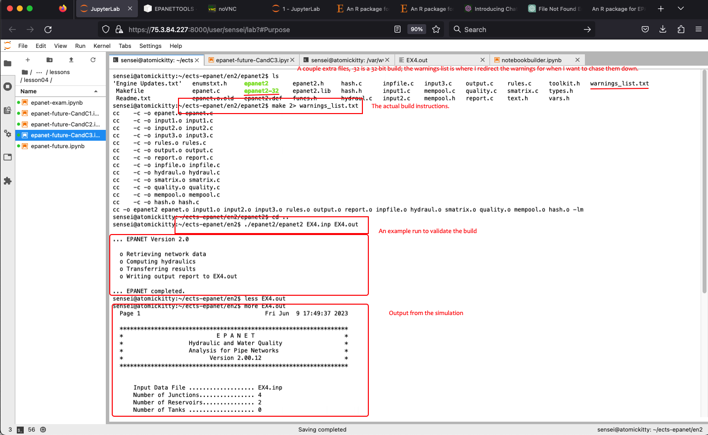
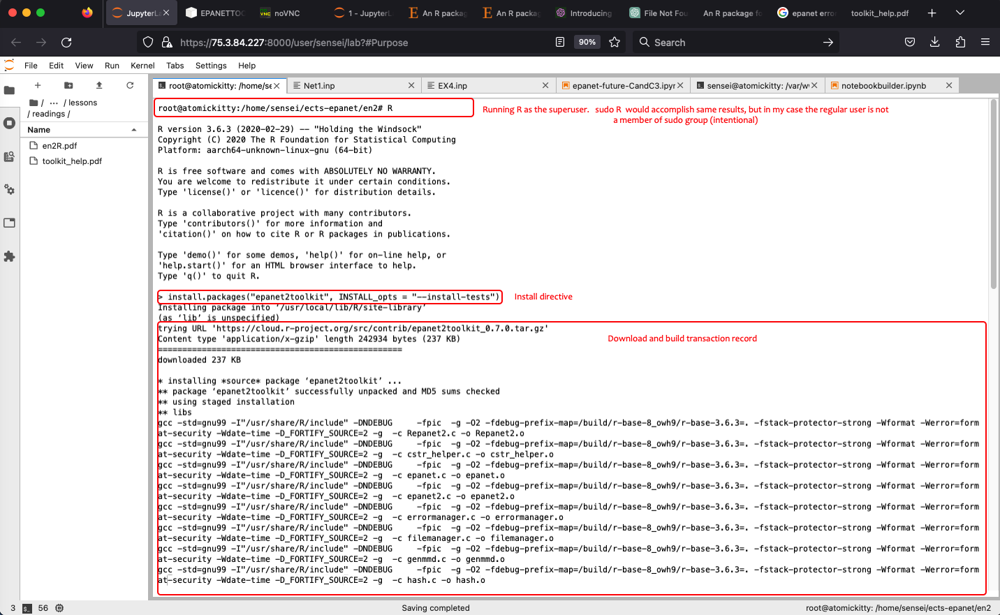
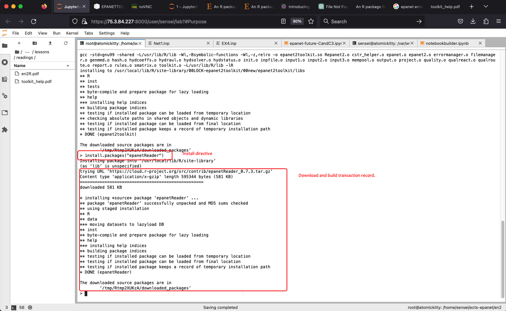
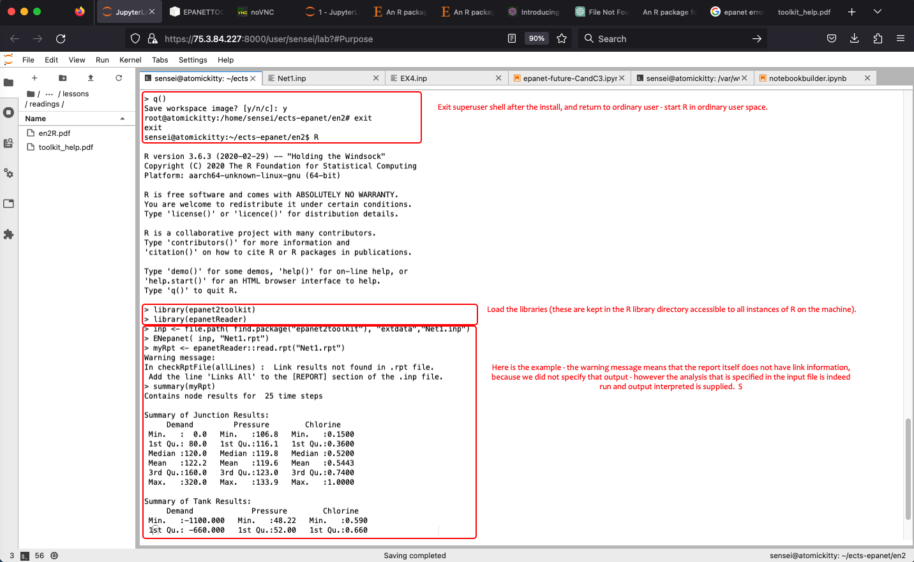

4.X Build Notes¶
Purpose¶
This section is a record of various “build” notes for running epanet on a Raspberry Pi - the development machine for this entire short course!
Note
The “online-EPANET” used for the GUI-based examples is run on Intel-based hardware, and was “built” simply by installing it in the WINE application layer. Oddly enough, it worked well enough for the needs of this document (although moving and resizing the window does not work). I could not make WINE deliver EPANET with the GUI on a Raspberry Pi; someday I will try QEMU - that may be more sucessful; but that’s emulation not an application layer translation - there is no great reason to do so other than it would be cool.
Building the CLE program.¶
The command-line environment build is straightforward. The following is verbatim from the original programmers notes:
INSTRUCTIONS FOR COMPILING THE COMMAND LINE VERSION OF EPANET
USING THE GNU C/C++ COMPILER ON LINUX
=====================================================================
1. Open the file EPANET.C in a text editor and make sure the line
#define CLE
is not commented out while the lines
#define DLL
#define SOL
are commented out.
2. Copy the file "Makefile" to the directory where the EPANET engine
source code files are located.
3. Open a console shell and navigate to the EPANET engine source
code directory.
4. Issue the command:
make
to create an executable named epanet2.
Note
The above also works fine on MacOS, but you have to supply at path to
malloc.c. On my Macintosh, the file did not exist, but a Google search turned up one that when running the compiler seemed to function. That was circa 2017, I am sure it is no longer an issue.On my RPI, I could compile once, if I wished to recompile I would have to destroy all copies of the objects (
rm -f *.o) before runningmake. Even as root this was the case, so give this a try if you run into “file not found” errors on the make utility.On my RPI, I got a lot of warnings from the compiler. I choose to ignore them and did not attempt to chase down the causes. I suspect (in my case) it was a result of forcing 64-bit objects from older code. I’ll add a note if I get around to using newer code - for this short course I know the older code should work, so started there first. Why? Because my intent is to use EPANET as a supervisory simulator to actually issue control commands to a network via an RPI controller, mostly for teaching, but also as a more intelligent way to water an indoor garden.
A screen capture from my computer is shown

Files¶
epanet2toolkit (R package)¶
This section documents that the R package functions on RPi, which provides two pieces of information:
The .so library can be extracted from its store in the R library
The toolkit can be accessed on a RPi (so we are not constrained to intel hardware)
Installing on my RPi¶
I already have R installed. To install the epanet2toolkit onto my machine the following R script is run as superuser.
# script to install epanet2toolkit and epanetReader
install.packages("epanet2toolkit", INSTALL_opts = "--install-tests")
install.packages("epanetReader")
library(epanet2toolkit)
library(epanetReader)
inp <- file.path( find.package("epanet2toolkit"), "extdata","Net1.inp")
ENepanet( inp, "Net1.rpt")
myRpt <- epanetReader::read.rpt("Net1.rpt")
summary(myRpt)
Actually only the first two lines above are run as a superuser to install into the R libraries that are shared by all users on the machine
First the tools install

Then the reader install

Then switch to a regular user and run the remainder of the example

Why this matters
We now have a working shared object library in usr/local/lib/R/site-library/epanet2toolkit/libs One can copy or symbolic link to this library instead of building from the original EPANET source.
Note
Obviously, building from original source is best, but on my computer it kept throwing an exception and ignoring the compiler directives to treat warnings as warnings - annoying to say the least. I know the R implementation works, so just modified things a bit to use that library - A hack, why YES! Necessary? Also YES. I am sure its a matter of a switch in the setup.py for epanettools or the config file - but I was desparate and it seemed to work.